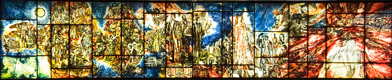
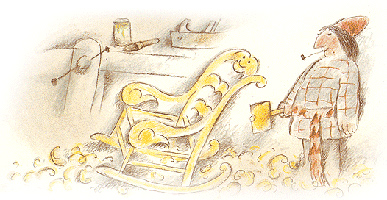

Biographie
L'enfance
Fils d’un père musicien percussionniste (timbalier) qui se nomme Jean Back et d'une mère dessinatrice, Wilhelmine, tous deux alsaciens. Sa soeur, Anita, naît en 1926. Back grandit à Strasbourg puis déménage à Paris avec sa famille en 1937. Il y étudie alors l’art à l’École Estienne. Back intègre également l’École régionale des beaux-arts de Rennes, où il est étudiant de Mathurin Méheut, un artiste peintre spécialisé dans la représentation des créatures marines. Back commence sa carrière de peintre et expose ses œuvres au Salon de la Marine, à Paris, en 1946.
Ses débuts
Il émigre à Montréal en 1948 à l’invitation de sa correspondante, Ghylaine Paquin, avec qui il se marie l’année suivante (ils resteront mariés jusqu’à la mort de Frédéric et auront trois enfants). Back enseigne à l’École du Meuble et à l’École des beaux-arts de Montréal.
En 1952, il entre au studio des arts graphiques de Radio-Canada. Il crée alors des illustrations et des effets visuels pour plusieurs programmes et construit des décors et des maquettes pour de nombreuses émissions éducatives et scientifiques. Il réalise également plusieurs illustrations historiques pour Samuel de Champlain (Québec 1603) (1964), un court-métrage documentaire de l’Office national du film réalisé par Denys Arcand (voir aussi Samuel de Champlain).
Verrières et cinéma
Dans les années 1960, il réalise plusieurs verrières d’églises et de lieux publics, telle celle de la station de métro Place-des-Arts à Montréal, en 1967, assisté de René Derouin.
En 1968, il rejoint l'équipe du studio d'animation de Radio-Canada, créé par Hubert Tison. De 1968 à 1993 il réalise dix courts-métrages, ainsi que diverses présentations spéciales pour les programmes de la Société Radio-Canada. Les films de Frédéric Back sont acclamés sur tous les continents, les reconnaissances et les nombreux prix consacrent le talent et le travail mis à contribution pour chaque film. Frédéric Back est nommé quatre fois aux Oscars du cinéma et remporte deux fois l'Oscar du meilleur film d'animation : le premier (1982) pour Craci> (82) et le second (1988) pour L'Homme qui plantait des arbresi>. À lui seul, le film L'Homme qui plantait des arbresi> a gagné plus de quarante prix dans des festivals de films, un peu partout dans le monde.
Son message
Le cinéma d’animation lui est aussi un moyen pour transmettre son message écologiste et sensibiliser le public du monde entier aux causes environnementales qui lui tiennent à cœur. Partout où ils sont présentés, ses films recueillent l’admiration du milieu du cinéma mais surtout celle du grand public qui y trouve des raisons d’espérer et des motivations à agir. L'Homme qui plantait des arbres suscite partout sur la planète des mouvements spontanés de citoyens qui se mettent à planter des arbres eux aussi, ou bien s’en inspirent pour des initiatives locales appropriées
Jusqu'à la fin, Frédéric Back continue à dessiner et s’implique plus que jamais dans des projets reflétant les valeurs auxquelles il a toujours adhéré : la défense des animaux et de la nature. Membre fondateur de la Société pour vaincre la pollution (SVP) et de la Société québécoise pour la défense des animaux, il répond aux questions relatives au cinéma d’animation et à l’environnement, intervient dans les écoles, illustre des livres, crée des affiches et continue de planter des arbres. Membre de l'Association des amis du peintre Geoffroy Dauvergne, qui fut son condisciple aux Beaux-Arts de Rennes, en vue de la préservation du capital culturel pictural français. Membre de l'organisme Les artistes pour la paix, il a reçu, en 2010, un prix hommage célébrant son implication sociale, en particulier dans sa lutte contre le nucléaire.
Végétarien convaincu, il cite souvent Marguerite Yourcenar : « Les animaux sont mes amis et je ne mange pas mes amis.»
Depuis 2005, il est directeur artistique du site Internet qui lui est consacré, Les Dessins d’une vie.
Il meurt à Montréal le 24 décembre 2013, à l'âge de 89 ans, entouré de ses proches
Héritage
 Un grand nombre des films de Back sont considérés comme des classiques de l’animation. Leurs qualités techniques, artistiques et culturelles font qu’ils servent aujourd’hui de références académiques dans de nombreuses universités et écoles d’art. En 1987, l’American Film Institute présente une rétrospective de son œuvre dans le cadre de la Walter Lantz Conference on Animation. Des rétrospectives de son œuvre sont également organisées par le Musée des beaux-arts de Montréal en 2009 et par le Musée d'art contemporain de Tokyo en 2011 (Walt Disney fut le seul autre animateur a y être présenté).En 1984, Crac est nommé sixième meilleur film animé de tous les temps lors de l’Olympiad of Animation à Los Angeles. Frédéric Back: Grandeur nature, un documentaire sur Back réalisé par Phil Comeau, sort en 2012. Son fils, Francis Back, est un illustrateur et scénarimagiste accompli. Après la mort de Back des suites d’un cancer, un service commémoratif public est célébré à la Maison symphonique de Montréal et ses principales œuvres sont exposées dans le Hall d'honneur de la mairie de Montréal.